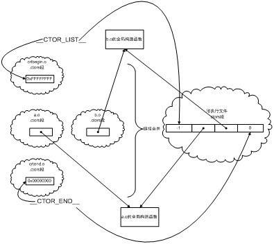
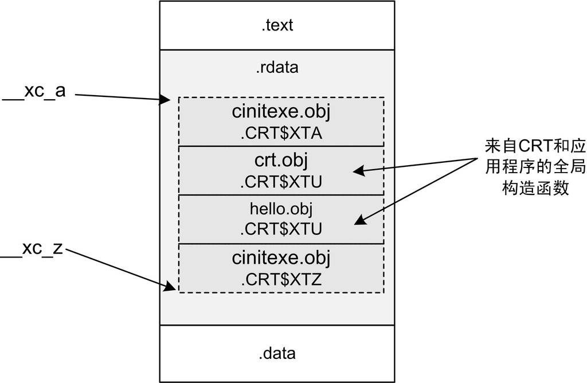

11.4 C++全域性構造與析構
在C++的世界裡，入口函式還肩負著另一個艱巨的使命，那就是在main的前後完成全域性變數的構造與析構。本節將介紹在glibc和MSVCRT的努力下，這件事是如何完成的。
11.4.1 glibc全域性構造與析構
在前面介紹glibc的啟動檔案時已經介紹了“.init”和“.finit”段，我們知道這兩個段中的程式碼最終會被拚成兩個函式_init()和_finit()，這兩個函式會先於/後於main函式執行。但是它們具體是在什麼時候被執行的呢？由誰來負責呼叫它們呢？它們又是如何進行全域性物件的構造和析構的呢？為瞭解決這些問題，這一節將繼續沿著本章第一節從_start入口函式開始的那條線進行摸索，順藤摸瓜地找到這些問題的答案。
為了表述方便，下面使用這樣的程式碼編譯出來的執行檔進行分析：
class HelloWorld
{
public:
HelloWorld();
~HelloWorld();
};
HelloWorld Hw;
HelloWorld::HelloWorld()
{
......
}
HelloWorld::~HelloWorld()
{
......
}
int main()
{
return 0;
}
為了了解全域性物件的構造細節，對程式的啟動過程進行更深一步的研究是必須的。在本章的第一節裡，由_start傳遞進來的init函式指標究竟指向什麼？透過對地址的跟蹤，init實際指向了__libc_csu_init函式。這個函式位於Glibc原始碼目錄的csu\Elf-init.c，讓我們來看看這個函式的定義：
_start –> __libc_start_main -> __libc_csu_init:
void __libc_csu_init (int argc, char **argv, char **envp)
{
…
_init ();
const size_t size = __init_array_end -
__init_array_start;
for (size_t i = 0; i < size; i++)
(*__init_array_start [i]) (argc, argv, envp);
}
這段程式碼呼叫了_init函式。那麼_init()是什麼呢？是不是想起來前面介紹過的定義在crti.o的_init()函式呢？沒錯，__libc_csu_init裡面呼叫的正是“.init”段，也就是說，使用者所有放在“.init”段的程式碼就將在這裡被執行。
看到這裡，似乎我們的線索要斷了，因為“_init”函式的實際內容並不定義在Glibc裡面，它是由各個輸入目的檔中的“.init”段拚湊而來的。不過除了分析原始碼之外，還有一個終極必殺就是反組譯目的碼，我們隨意反組譯一個執行檔就可以發現_init()函式的內容：
_start –> __libc_start_main -> __libc_csu_init –> _init： Disassembly of section .init: 80480f4 <_init>: 80480f4: 55 push %ebp 80480f5: 89 e5 mov %esp,%ebp 80480f7: 53 push %ebx 80480f8: 83 ec 04 sub $0x4,%esp 80480fb: e8 00 00 00 00 call 8048100 <_init+0xc> 8048100: 5b pop %ebx 8048101: 81 c3 9c 39 07 00 add $0x7399c,%ebx 8048107: 8b 93 fc ff ff ff mov -0x4(%ebx),%edx 804810d: 85 d2 test %edx,%edx 804810f: 74 05 je 8048116 <_init+0x22> 8048111: e8 ea 7e fb f7 call 0 <_nl_current_LC_CTYPE> 8048116: e8 95 00 00 00 call 80481b0 <frame_dummy> 804811b: e8 b0 6e 05 00 call 809efd0 <__do_global_ctors_aux> 8048120: 58 pop %eax 8048121: 5b pop %ebx 8048122: c9 leave 8048123: c3 ret
可以看到_init呼叫了一個叫做__do_global_ctors_aux的函式，如果你在glibc原始碼裡面查詢這個函式，是不可能找到它的。因為它並不屬於glibc，而是來自於GCC提供的一個目的檔crtbegin.o。我們在上一節中也介紹過，連結器在進行最終連結時，有一部分目的檔是來自於GCC，它們是那些與語言密切相關的支援函式。很明顯，C++的全域性物件構造是與語言密切相關的，相應負責構造的函式來自於GCC也非常容易理解。
即使它在GCC的原始碼中，我們也把它揪出來。它位於gcc/Crtstuff.c，把它簡化以後程式碼如下：
_start –> __libc_start_main -> __libc_csu_init –> _init -> __do_global_ctors_aux：
void __do_global_ctors_aux(void)
{
/* Call constructor functions. */
unsigned long nptrs = (unsigned long) __CTOR_LIST__[0];
unsigned i;
for (i = nptrs; i >= 1; i--)
__CTOR_LIST__[i] ();
}
上面這段程式碼首先將__CTOR_LIST__陣列的第一個元素當做陣列元素的個數，然後將第一個元素之後的元素都當做是函式指標，並一一呼叫。這段程式碼的意圖非常明顯，我們都可以猜到__CTOR_LIST__裡面存放的是什麼，沒錯，__CTOR_LIST__裡面存放的就是所有全域性物件的建構函式的指標。那麼接下來的焦點很明顯就是__CTOR_LIST__了，這個陣列怎麼來的，由誰負責構建這個陣列？
__CTOR_LIST__
這裡不得不暫時放下__CTOR_LIST__的身世來曆，從GCC方面再追究__CTOR_LIST__未免有些乏味，我們不妨從問題的另一端，也就是從編譯器如何生產全域性建構函式的角度來看看全域性建構函式是怎麼實現的。
對於每個編譯單元(.cpp)，GCC編譯器會遍曆其中所有的全域性物件，生成一個特殊的函式，這個特殊函式的作用就是對本編譯單元裡的所有全域性物件進行初始化。我們可以透過對本節開頭的程式碼進行反組譯得到一些粗略的資訊，可以看到GCC在目的碼中生成了一個名為_GLOBAL__I_Hw的函式，由這個函式負責本編譯單元所有的全域性\靜態物件的構造和析構，它的程式碼可以表示為：
static void GLOBAL__I_Hw(void)
{
Hw::Hw(); // 構造對象
atexit(__tcf_1); // 一個神祕的函數叫做__tcf_1被注冊到了exit
}
我們暫且不管這裡的神秘函式__tcf_1，它將在本節的最後部分講到。GLOBAL__I_Hw作為特殊的函式當然也享受特殊待遇，一旦一個目的檔裡有這樣的函式，編譯器會在這個編譯單元產生的目的檔(.o)的“.ctors”段裡放置一個指標，這個指標指向的便是GLOBAL__I_Hw。
那麼把每個目的檔的複雜全域性/靜態物件構造的函式地址放在一個特殊的段裡面有什麼好處呢？當然不為別的，為的是能夠讓連結器把這些特殊的段收集起來，收集齊所有的全域性建構函式後就可以在初始化的時候進行構造了。
在編譯器為每個編譯單元生成一份特殊函式之後，連結器在連線這些目的檔時，會將同名的段合並在一起，這樣，每個目的檔的.ctors段將會被合並為一個.ctors段，其中的內容是各個目的檔的.ctors段的記憶體拚接而成。由於每個目的檔的.ctors段都只儲存了一個指標（指向該目的檔的全域性建構函式），因此拚接起來的.ctors段就成為了一個函式指標陣列，每一個元素都指向一個目的檔的全域性建構函式。這個指標陣列不正是我們想要的全域性建構函式的地址列表嗎？如果能得到這個陣列的地址，豈不是構造的問題就此解決了？
沒錯，得到這個陣列的地址其實也不難，我們可以效仿前面“.init”和“.finit”拚湊的辦法，對“.ctor”段也進行拚湊。還記得在連結的時候，各個使用者產生的目的檔的前後分別還要連結上一個crtbegin.o和crtend.o吧？這兩個glibc自身的目的檔同樣具有.ctors段，在連結的時候，這兩個檔案的.ctors段的內容也會被合並到最終的執行檔中。那麼這兩個檔案的.ctors段裡有什麼呢？
crtbegin.o：作為所有.ctors段的開頭部分，crtbegin.o的.ctor段裡面儲存的是一個4位元組的?1(0xFFFFFFFF)，由連結器負責將這個數字改成全域性建構函式的數量。然後這個段還將起始地址定義成符號__CTOR_LIST__，這樣實際上__CTOR_LIST__所代表的就是所有.ctor段最終合並後的起始地址了。
crtend.o：這個檔案裡面的.ctors內容就更簡單了，它的內容就是一個0，然後定義了一個符號__CTOR_END__，指向.ctor段的末尾。
在前面的章節中已經介紹過了，連結器在連結使用者的目的檔的時候，crtbegin.o總是處在使用者目的檔的前面，而crtend.o則總是處在使用者目的檔的後面。例如連結兩個使用者的目的檔a.o和b.o時，實際連結的目的檔將是（按順序）ld crti.o crtbegin.o a.o b.o crtend.o crtn.o。在這裡我們忽略crti.o和crtn.o，因為這兩個目的檔和全域性構造無關。在合並crtbegin.o、使用者目的檔和crtend.o時，連結器按順序拚接這些檔案的.ctors段，因此最終形成.ctors段的過程將如圖11-10所示。

在瞭解了執行檔的.ctors段的結構之後，再回過頭來看__do_global_ctor_aux的程式碼就很容易了。__do_global_ctor_aux從__CTOR_LIST__的下一個位置開始，按順序執行函式指標，直到遇上NULL（__CTOR_END__）。如此每個目的檔的全域性建構函式都能被呼叫。
【小實驗】
在main前呼叫函式：
glibc的全域性建構函式是放置在.ctors段裡的，因此如果我們手動在.ctors段裡新增一些函式指標，就可以讓這些函式在全域性構造的時候（main之前）呼叫：
#include <stdio.h>
void my_init(void)
{
printf("Hello ");
}
typedef void (*ctor_t)(void);
//在.ctors段裏添加一個函數指針
ctor_t __attribute__((section (".ctors"))) my_init_p = &my_init;
int main()
{
printf("World!\n");
return 0;
}
#include <stdio.h>
void my_init(void)
{
printf("Hello ");
}
typedef void (*ctor_t)(void);
//在.ctors段裏添加一個函數指針
ctor_t __attribute__((section (".ctors"))) my_init_p = &my_init;
int main()
{
printf("World!\n");
return 0;
}
如果執行此程式，結果將列印出：Hello World!
當然，事實上，gcc裡有更加直接的辦法來達到相同的目的，那就是使用__attribute__((constructor))
示例如下：
#include <stdio.h>
void my_init(void) __attribute__ ((constructor));
void my_init(void)
{
printf("Hello ");
}
int main()
{
printf("World!\n");
return 0;
}
析構
對於早期的glibc和GCC，在完成了物件的構造之後，在程式結束之前，crt還要進行物件的析構。實際上正常的全域性物件析構與前面介紹的構造在過程上是完全類似的，而且所有的函式、符號名都一一對應，比如“.init”變成了“.finit”、“__do_global_ctor_aux”變成了“__do_global_dtor_aux”、“__CTOR_LIST__”變成了“__DTOR_LIST__”等。在前面介紹入口函式時我們可以看到，__libc_start_main將“__libc_csu_fini”透過__cxa_exit()註冊到退出列表中，這樣當程式退出前exit()裡面就會呼叫“__libc_csu_fini”。“_fini”的原理和“_init”基本是一樣的，在這裡不再一一贅述了。
不過這樣做的好處是為了保證全域性物件構造和析構的順序（即先構造後析構），連結器必須包裝所有的“.dtor”段的合並順序必須是“.ctor”的嚴格反序，這增加了連結器的工作量，於是後來人們放棄了這種做法，採用了一種新的做法，就是透過__cxa_atexit()在exit()函式中註冊程式退出回撥函式來實現析構。
這就要回到我們之前在每個編譯單元的全域性建構函式GLOBAL__I_Hw()中看到的神秘函式。編譯器對每個編譯單元的全域性物件，都會生成一個特殊的函式來呼叫這個編譯單元的所有全域性物件的解構函式，它的呼叫順序與GLOBAL__I_Hw()呼叫建構函式的順序剛好相反。例如對於前面的例子中的程式碼，編譯器生成的所謂的神秘函式內容大致是：
static void __tcf_1(void) //這個名字由編譯器生成
{
Hw.~HelloWorld();
}
static void __tcf_1(void) //這個名字由編譯器生成
{
Hw.~HelloWorld();
}
此函式負責析構Hw物件，由於在GLOBAL__I_Hw中我們透過__cxa_exit()註冊了__tcf_1，而且透過__cxa_exit()註冊的函式在程式退出時被呼叫的順序滿足先註冊後呼叫的屬性，與構造和析構的順序完全符合，於是它就很自然被用於解構函式的實現了。
當然在本節中介紹glibc/GCC的全域性物件構造和析構時，省略了不少我們認為超出了本書所要強調的範圍細節，真正的構造和析構過程比上面介紹的要複雜一些，並且在動態連結和靜態連結不同的情況下，構造和析構還略有不同。但是不管哪種情況，基本的原理都是相通的，按照上面介紹的步驟和路徑，相信讀者也能夠自己重新根據真實的情況梳理清楚這條呼叫路線。
由於全域性物件的構建和析構都是由執行庫完成的，於是在程式或共用函式庫中有全域性物件時，記得不能使用“-nonstartfiles”或“-nostdlib”選項，否則，構建與解構函式將不能正常執行（除非你很清楚自己的行為，並且手工構造和析構全域性物件）。
Collect2
我們在第2章時曾經碰到過collect2這個程式，在連結時它代替ld成為了最終連結器，一般情況下就可以簡單地將它看成ld。實際上collect2是ld的一個包裝，它最終還是呼叫ld完成所有的連結工作，那麼collect2這個程式的作用是什麼呢？
在有些系統上，組譯器和連結器並不支援本節中所介紹的“.init”“.ctor”這種機制，於是為了實現在main函式前執行程式碼，必須在連結時進行特殊的處理。Collect2這個程式就是用來實現這個功能的，它會“收集”（collect）所有輸入目的檔中那些命名特殊的符號，這些特殊的符號表明它們是全域性建構函式或在main前執行，collect2會生成一個臨時的.c檔案，將這些符號的地址收整合一個陣列，然後放到這個.c檔案裡面，編譯後與其他目的檔一起被連結到最終的輸出檔案中。
在這些平台上，GCC編譯器也會在main函式的開始部分產生一個__main函式的呼叫，這個函式實際上就是負責collect2收集來的那些函式。__main函式也是GCC所提供的目的檔的一部分，如果我們使用“-nostdlib”編譯程式，可能得到__main函式未定義的錯誤，這時候只要加上“-lgcc”把它連結上即可。
11.4.2 MSVC CRT的全域性構造和析構
在瞭解了Glibc/GCC的全域性構造析構之後，讓我們趁熱打鐵來看看MSVC在這方面是如何實現的，有了前面的經驗，在介紹MSVC CRT的全域性構造和析構的時候使用相對簡潔的方式，因為很多地方它們是相通的。
首先很自然想到在MSVC的入口函式mainCRTStartup裡是否有全域性構造的相關內容。我們可以看到它呼叫了一個函式為：
mainCRTStartup:
mainCRTStartup()
{
…
_initterm( __xc_a, __xc_z );
…
}
其中__xc_a和__xc_z是兩個函式指標，而initterm的內容則是：
mainCRTStartup -> _initterm:
// file: crt\src\crt0dat.c
static void __cdecl _initterm (_PVFV * pfbegin,_PVFV * pfend)
{
while ( pfbegin < pfend )
{
if ( *pfbegin != NULL )
(**pfbegin)();
++pfbegin;
}
}
其中_PVFV的定義是：
typedef void (__cdecl *_PVFV)();
從_PVFV的定義可以看出，它是一個函式指標型別，__xc_a和__xc_z則都是函式指標的指標。不過第一眼看到_initterm這個函式是不是看著很眼熟呢？對照Glibc/GCC的實現，_initterm長得可謂與__do_global_ctors_aux一模一樣，它依次遍曆所有的函式指標並且呼叫它們, __xc_a就是這個指標陣列的開始地址，相當於__CTOR_LIST__；而__xc_z則是結束地址，相當於__CTOR_END__。
__xc_a和__xc_z不是mainCRTStartup的引數或區域性變數，而是兩個全域性變數，它們的值在mainCRTStartup呼叫之前就已經正確地設定好了。我們知道mainCRTStartup作為入口函式是真正第一個執行的函式，那麼MSVC是如何在此之前就將這兩個指標正確設定的呢？讓我們來看看__xc_a和__xc_z的定義：
// file: crt\src\cinitexe.c
_CRTALLOC(".CRT$XCA") _PVFV __xc_a[] = { NULL };
_CRTALLOC(".CRT$XCZ") _PVFV __xc_z[] = { NULL };
其中宏_CRTALLOC 定義於crt\src\sect_attribs.h：
……
#pragma section(".CRT$XCA",long,read)
#pragma section(".CRT$XCZ",long,read)
……
#define _CRTALLOC(x) __declspec(allocate(x))
在這個標頭檔裡，需要注意的是兩條pragma指令。形如#pragma section的指令語法如下：
#pragma section( "section-name" [, attributes] )
作用是在生成的obj檔案裡建立名為section-name的段，並具有attributes屬性。因此這兩條pragma指令實際在obj檔案裡生成了名為.CRT$XCA和.CRT$XCZ的兩個段。下面再來看看_CRTALLOC這個宏，該宏的定義為__declspec(allocate(x))，這個指示字表明其後的變數將被分配在段x裡。所以__xc_a被分配在段.CRT$XCA裡，而__xc_z被分配在段.CRT$XCZ裡。
作用是在生成的obj檔案裡建立名為section-name的段，並具有attributes屬性。因此這兩條pragma指令實際在obj檔案裡生成了名為.CRT$XCA和.CRT$XCZ的兩個段。下面再來看看_CRTALLOC這個宏，該宏的定義為__declspec(allocate(x))，這個指示字表明其後的變數將被分配在段x裡。所以__xc_a被分配在段.CRT$XCA裡，而__xc_z被分配在段.CRT$XCZ裡。
現在我們知道__xc_a和__xc_z分別處於兩個特殊的段裡，那麼它是如何形成一個儲存了初始化函式的陣列呢？當編譯的時候，每一個編譯單元都會生成名為.CRT$XCU（U是User的意思）的段，在這個段中編譯單元會加入自身的全域性初始化函式。當連結的時候，連結器會將所有相同屬性的段合並，值得注意的是：在這個合並過程中，所有輸入的段在被合並到輸出段時，是據字母表順序依次排列。於是在本例中，各個段連結之後的狀態可能如圖11-11所示。
由於.CRT$XT*這些段的屬性都是只讀的，且它們的名字很相近，所以它們會被按順序合並到一起，最後往往被放到只讀段中，成為.rdata段的一部分。這樣就自然地形成了儲存所有全域性初始化函式的陣列，以供_initterm函式遍曆。我們不得不再次驚歎！MSVC CRT的全域性構造實現在機制上與Glibc基本是一樣的，只不過它們的名字略有不同，MSVC CRT採用這種段合並的模式與.ctor的合並及__CTOR_LIST__和__CTOR_END__的地址確定何其相似！這再一次證明瞭雖然各個作業系統、執行庫、編譯器在細節上大相徑庭，但是在基本實現的機制上其實是完全相通的。

【小實驗】
自己新增初始化函式：
#include <iostream>
#define SECNAME ".CRT$XCG"
#pragma section(SECNAME,long,read)
void foo()
{
std::cout << “hello” << std::endl;
}
typedef void (__cdecl *_PVFV)();
__declspec(allocate(SECNAME)) _PVFV dummy[] = { foo };
int main()
{
return 0;
}
執行這個程式，可以得到如“hello”的輸出。為了驗證A～Z的這個字母表排列，讀者可以修改SECNAME，使之不處於.CRT$XCA和.CRT$XCZ之間，理論上不會得到任何輸出。而如果將段名改為.CRT$XCV（V的字典序在U之後），那麼foo函式將在main執行之後執行。
MSVC CRT 析構
最後來看看MSVC的全域性析構的實現，在MSVC裡，只需要在全域性變數的定義位置上設定一個斷點，就可以看到在.CRT$XC?中定義的全域性初始化函式的內容。我們仍然使用本章一開頭的HelloWorld來作為示例：
#include <iostream>
class HelloWorld
{
public:
HelloWorld() {std::cout << "hi\n";}
~HelloWorld(){std::cout << "bye\n";}
};
HelloWorld Hw;
int main()
{
return 0;
}
這裡在加粗的位置上設定斷點。執行程式並中斷之後檢視反組譯可以得到初始化函式的內容：
011B1B70 mov eax,dword ptr [__imp_std::cout (11B2054h)] 011B1B75 push offset string "hi\n" (11B2124h) 011B1B7A push eax 011B1B7B call std::operator<<<std::char_traits<char> > (11B1140h) 011B1B80 push offset `dynamic atexit destructor for 'Hw'' (11B1B90h) 011B1B85 call atexit (11B13B0h) 011B1B8A add esp,0Ch 011B1B8D ret
在這裡可以看見這段程式首先呼叫了內聯之後的HelloWorld的建構函式，然後和g++相同，呼叫atexit將一個名為dynamic atexit destructor for 'Hw''的函式註冊給程式退出時呼叫。而這個dynamic atexit destructor for 'Hw''函式的定義也能很容易找到：
`dynamic atexit destructor for 'Hw'': 011B1B90 mov eax,dword ptr [__imp_std::cout (11B2054h)] 011B1B95 push offset string "bye\n" (11B2128h) 011B1B9A push eax 011B1B9B call std::operator<<<std::char_traits<char> > (11B1140h) 011B1BA0 add esp,8 011B1BA3 ret
可以看出，這個函式的作用就是在物件Hw呼叫內聯之後進行析構。看到這裡，我想各位讀者肯定有跟我一樣的心情，那就是希望舉一反三的願望並不是不切實際的，它是實實在在存在的。Glibc下透過__cxa_exit()向exit()函式註冊全域性解構函式；MSVC CRT也透過atexit()實現全域性析構，它們除了函式命名不同之外幾乎沒有區別。